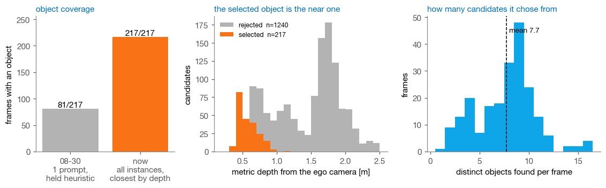
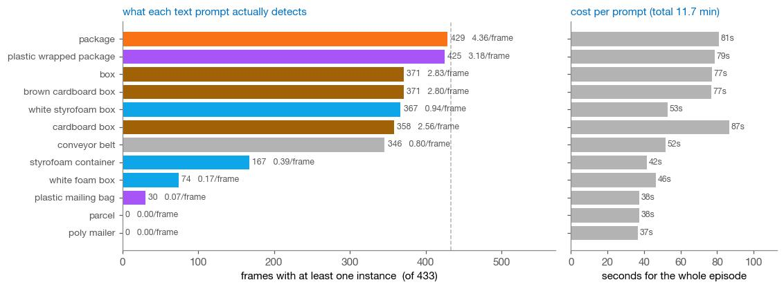
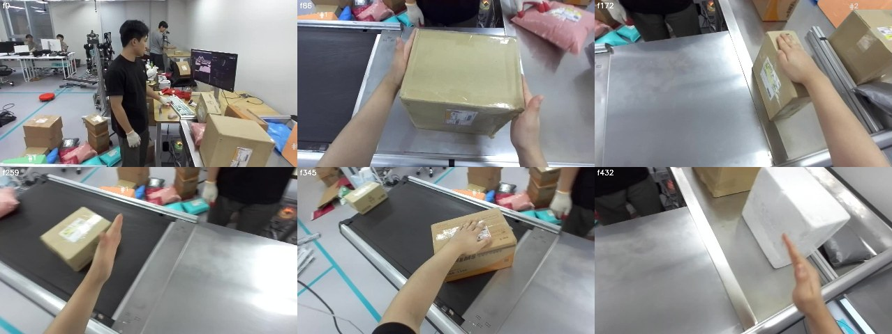
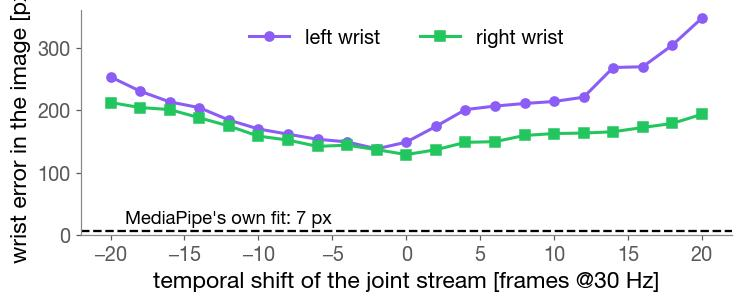
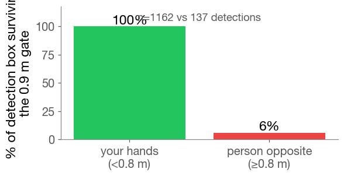

Frontier logistics: segment every object, keep the nearest one
BMW & Frontier Demo · overnight run · object selection and hand provenance
Lab meeting
2026. 09. 02
Presented by beomjun
Overview
[TL;DR] Keeping every instance and picking the nearest fixes coverage.
- Done: twelve prompts screened, costed
- Done: two episodes, both hand fixes
- Open: which hand source to trust

object orange · rejected slate · left hand purple · right hand green · hollow ring = stored (retargeted) wrist · v3/human_hmd_new ep0
Method (1): One prompt already sees everything
The old misses came from the selection rule, not the detector.
- “package” finds every object class
- Two named concepts detect nothing
- Each prompt costs about a minute


dead concepts: “poly mailer”, “parcel” — zero instances; “plastic mailing bag” only a handful. 433 frames, SAM3.1, area floor 0.3 %
Method (2): Selection by metric depth
Merge instances across prompts, keep the one nearest the camera.
- IoU merge removes cross-prompt duplicates
- VGGT metric depth ranks candidates
- Continuity credit prevents identity flicker

selection is local post-processing: every instance is stored, so changing the rule needs no GPU re-run
Results
- Every candidate, and the one chosen
- orange selected, slate rejected, per frame
- caption prints its depth and candidate count
- Hand and object together in 3D
- Where the hand pose comes from
BMW's two-panel grammar (mano_run101_work/viz_handobj2.py), so the two rigs read side by side
Results
- Every candidate, and the one chosen
- Hand and object together in 3D
- camera follows the hands, orbits them
- ends on one grasp, fully turned
- Where the hand pose comes from
the first cut framed one 179 cm box for every episode, so the action filled a quarter of the panel; a reach gate now drops wrists past 90 cm
Results
- Every candidate, and the one chosen
- Hand and object together in 3D
- Which hand source to trust
- the stored wrist is the robot's, not yours
- four candidates; the best two untried


A MediaPipe · B HaWoR
C stereo · D seungjun's solver
same frames, overlaid
ETA · C stereo: local, ~1 h · D solver: unestimated · already fixed: chirality, frame convention, slot inversion
Discussion & Action items
Two decisions; everything else is queued and needs no input.
Discussion:
- Object slots — package only vs package + conveyor → both, the conveyor is the destination (owner)
- Hand source — A MediaPipe+VGGT · B HaWoR · C stereo triangulation · D seungjun's MANO solver → D, it adds a shape prior the 66 mm baseline needs (owner picks from the overlay)
- SAM 3D — request HF access or drop → request it; mesh completion is the only remaining gap (owner)
Action items:
- Confirm the selected object reads right (owner · one look)
- Ask HF for facebook/sam-3d-objects access (owner · today)
- HaWoR vs MediaPipe hand comparison (agent · queued)
- Object extraction ep2–ep19 (agent · after go)
Appendix · evidence paths · references · cut list
- Masks
- hmd_object_demo/sam3_multi.py → ep0/sam3_multi/{masks_multi.npz, screen.json, prompt_*.jpg} · job 151337, debug, 11.7 min, 7840 instances
- Selection
- viz/object_select.py → viz/cache/ep0_objsel.npz (IoU 0.55 merge, depth rank, 5 cm continuity credit)
- Hands
- viz/hand_from_video.py (MediaPipe 21 kp → SQPnP → VGGT anchor) · hmd_object_demo/hawor_hands.py → hawor_out/ep0_hawor.npz (MANO trans/rot/pose/betas + joints + vertices, both hands, all 866 frames; job 151398) · viz/hawor_compare.py
- Stored wrist
- NOT the human wrist: it projects 149/129 px (L/R) from MediaPipe's detected 2D wrist, 14–17 cm in 3D, while MediaPipe's own fit sits at 7 px. Not intrinsics (Quest calib fx 863.8 gives 144/123 px; fx 950 gives 155/139) and not sync (a ±20-frame sweep bottoms out at −1 frame, 135 px). The offset is NOT constant in the wrist frame either (residual 134/147 mm), which is the signature of retargeting IK — so what is stored is the allex wrist, and it cannot anchor or validate a video estimate.
- Ego filter
- 0.9 m depth gate + 25 px dilation keeps 100% of your own hand boxes (n=1162) and 6% of the person opposite (n=137); box area 65,980 vs 12,221 px², box centre y 465 vs 298. Best insertion point for D is between his stages 1 and 2, or (cleaner on a stereo rig) reject by triangulated depth so no VGGT is involved.
- Option D
- seungjun's solver IS available and untried — pull/MANO-pipeline/scripts/run_standalone_session.py → scripts_optimization/{hand_detection,generate_kpt3d_auto,mano_pose_solver}.py; losses in rlwrld_annotation/loss/. Loader is view-count agnostic (num_cameras=len(serials)) and `--optimize_beta` fits per-subject bone lengths — the shape prior our 66 mm baseline needs. Server original /rlwrld3/home/seungjun/MANO-pipeline (venv + MANO models there).
- Frame bug
- Found 2026-09-02 by the rigid-stereo unit test: with rot6d decoded as rows=(b1,b2,b1×b2), the base→camera map is R.T·(X−p), not R·(X−p) — only the former makes the 66.4388 mm stereo offset constant ([66.3665,−2.0523,2.3220] mm, std 2e−5 mm vs 9–12 mm). My viz used the wrong form; corrected in to_cam/to_base and everything re-rendered. It had inflated the right-hand detection share (88/188 → 130/146) and made the stored wrists look unusable as a handedness reference (L:41/R:1258 → L:689/R:610).
- Hand fixes
- (1) MediaPipe emits world_landmarks in its per-frame handedness guess, which is a coin flip on a self-view — chirality flipped 27/88 and 60/188 times, impossible for a real hand; now forced to one chirality per slot (110 of 276 ep0 detections mirrored back, 0 flips after). (2) HaWoR's output slots are inverted — confirmed against two independent references after the frame fix: vs our MediaPipe hands 11.0 cm swapped vs 35.6 cm as-run, and vs the dataset's own Quest-derived wrists 19.7 cm vs 38.7 cm. Its per-detection handedness label is actually GOOD (86% agreement with the stored-wrist geometry, mapping label 0 = left), so the inversion is in its label→slot convention, not its detector. (3) Two people in frame is real (10 % of detections ≥ 0.8 m, 5× smaller, higher in frame) but is NOT the cause — depth-gating the video changed nothing (98°→96°).
- HaWoR frame
- its run_mano joints are canonical-space; `trans` IS the camera-space wrist (10.6 cm median from the MediaPipe wrists; a global similarity fit does not improve it, so no convention is being missed). Skeleton = root-relative joints placed at trans. Slots assigned per frame, not by its naming
- Render
- viz/full_episode_viz.py · viz/hands3d_multi.py · viz/deck_figs3.py
- SAM 3D
- facebook/sam-3d-objects — repo exists, 31 files, TRELLIS-style (slat/ss encoders+decoders); HF returns 403 GatedRepoError "not in the authorized list"
- Rig
- human Quest capture retargeted into allex's 48-dim schema; no external camera in 79 datasets or 30 raw sessions
- seungjun's MANO-pipeline: 2D/3D front end is MediaPipe (
mp_joints_3d_interpolated.npy,03_mp_3d_joints_generation.py); monocular path ensembles WiLoR + HaMeR 3D then fits MANO with 2D+3D+fingertip+barrier losses - Previous records: train data in 3D · logistics rig & frame
Cut: HaWoR contact/force heads (`--vis_contact`, `--vis_force`) · WiLoR+HaMeR 3D ensemble (tools_monocular absent from the readable checkout) · temporal accumulation for full object surface (waiting on the SAM 3D decision) · conveyor as a second DPP slot · per-instance mask storage format details · the 63.5 mm Quest calibration vs 66.4 mm measured baseline · allex FK hand keypoints (superseded by the video route) · intrinsics disagreement VGGT 709 px vs Quest 863 px.